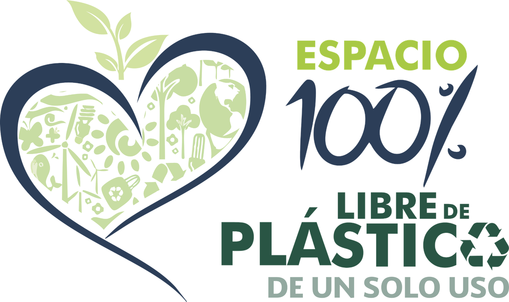
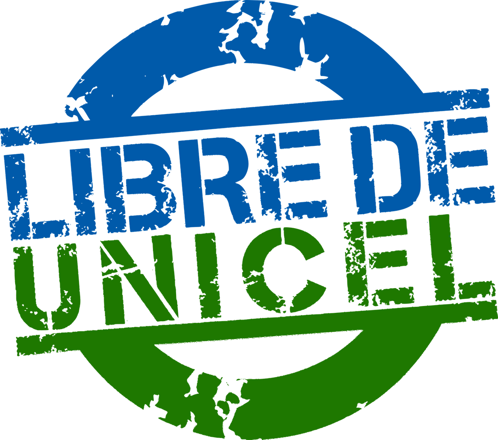

ACCIONES QUÉ TRANSFORMAN
CUATRO PILARES, MISMO COMPROMISO
Seleccione un pilar de gestión ambiental para acceder de forma directa a su documentación técnica oficial
Bienvenido a nuestra comunidad ambiental
Un campus consciente de sus residuos
¿Es tu primera visita? Este espacio te invita a descubrir cómo pequeños hábitos pueden ayudar a cuidar nuestro entorno.
Aquí conocerás por qué es importante reducir los plásticos de un solo uso, evitar el unicel y separar correctamente los residuos.
No necesitas experiencia previa: el cuidado del medio ambiente comienza al observar lo que consumimos, aprender a aprovechar los recursos y tomar decisiones responsables cada día.

